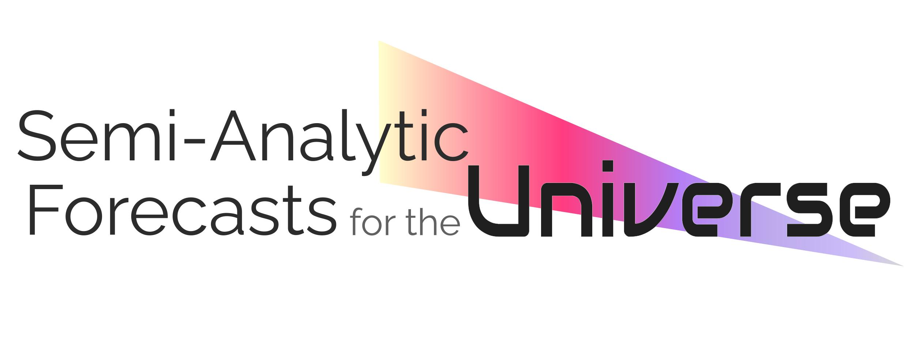
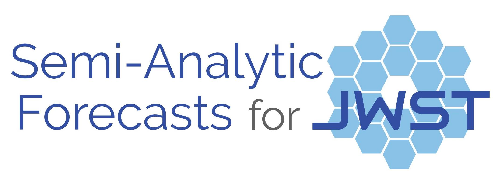
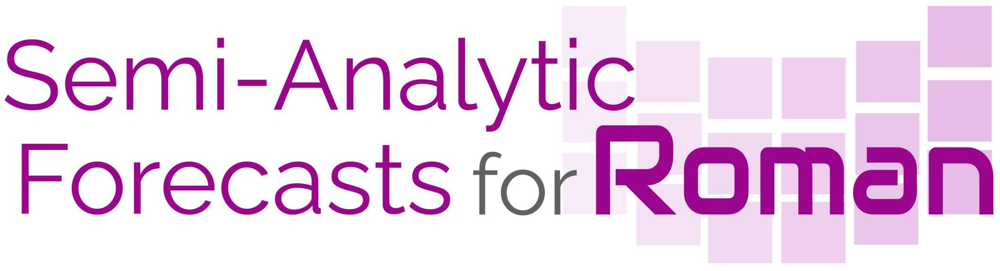
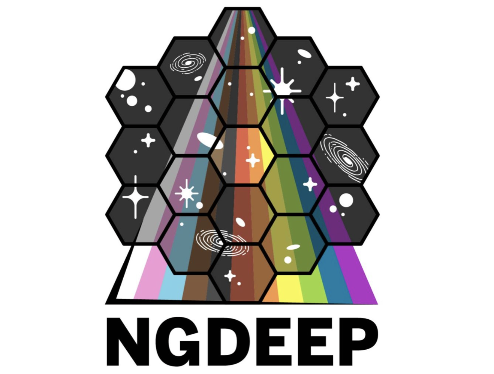

{kind=link}
Galaxies, Early Universe, Powerful Telescopes
three keywords to summarize my passions
and my scientific interest is certainly not limited to these! The Universe is big and full of mysteries, and there are so many things I want to study. Check out the complete list of publications and my full CV in the links below to learn about what I do. You can also learn more about me from my latest interview! Also check out all my other web profiles.
News
Research Highlights
Semi-analytic forecasts for the Universe

This is a series of work where we provide a comprehensive package of mock catalogues with galaxies predicted with the Santa Cruz SAM. We currently provide predictions for an extremely wide range of physical and observable galaxy properties, and photometry for the James Webb Space Telescope, Roman Space Telescope, Euclid Observatory, Rubin Observatory, as well as Hubble, Spitzer, VISTA, UKIRT, and many others. This comprehensive simulated data is great for all sorts of planning best survey strategies, maximizing scientific productivity of future missions, and exploring multi-instrument synergies.
Semi-analytic forecasts for JWST

My dissertation research has been published in a series of work entitled “Semi-analytic forecasts for JWST”, which I studied the co-evolution of galaxy formation and cosmic reionization using semi-analytic methods. Based on these results, we also made recommendations for survey designs for the long-anticipated, premier observatory James Webb Space Telescope. Click the links below to check out the Data Product Portal hosted by the Flatiron Institute and the full list of Forecasts Papers.
Semi-analytic forecasts for Roman

We have created some 2 sq. deg. lightcones, aiming to provide forecasts for the coming Nancy Grace Roman Space Telescope and other ground- and space-based facilities. Stay tuned for a large collection of data releases and science publications! My recent talk at the Roman Virtual Lecture Series.
The CEERS Collaboration
 The Cosmic Evolution Early Release Science (CEERS) Survey is a selected DD-ERS Program that will efficiently cover 100 sq. arcmin of the sky with JWST imaging and spectroscopy, taking advantage of JWST's various parallel observing capabilities. I am a Key Project Architect for the program, major contributor to the pre-launch data products, and Group Leader of the Simulations Working Group and Junior Scientist Working Group. Publications from the CEERS Collaboration are available here.
The Cosmic Evolution Early Release Science (CEERS) Survey is a selected DD-ERS Program that will efficiently cover 100 sq. arcmin of the sky with JWST imaging and spectroscopy, taking advantage of JWST's various parallel observing capabilities. I am a Key Project Architect for the program, major contributor to the pre-launch data products, and Group Leader of the Simulations Working Group and Junior Scientist Working Group. Publications from the CEERS Collaboration are available here.
The NGDEEP Collaboration

The Next Generation Deep Extragalactic Exploratory Public (NGDEEP) Survey is a selected Cycle 1 Treasury Program that will conduct extremely deep grism survey on the HUDF and image the HUDF-Par2 field. For survey descriptions see here and for early results see here.
Get In Touch
There is more!
Short Bio
Aaron Yung is a Giacconi Fellow at the Space Telescope Science Institute (STScI). Dr. Yung's research focuses on developing physical models for galaxy formation, with specific interest in the early episodes of our universe's evolution history. He is known for a series of publications entitled "Semi-Analytic Forecasts for the Universe”, which provides crucial predictions and simulated data products that help the design of extragalactic surveys with NASA’s flagship Webb and Roman Space Telescopes.
Prior to joining STScI, Dr. Yung was a NASA Postdoctoral Fellow at NASA Goddard Space Flight Center in Greenbelt, Maryland, the world’s leading space telescope development facility. He obtained his BS in physics and mathematics from the University of San Francisco in 2014 and his PhD in Astrophysics from Rutgers University in 2020. He was a visiting researcher at the Center for Computational Astrophysics at the Flatiron Institute in New York City from 2016 to 2020.
學術簡介
容朗殷博士現於太空望遠鏡科學研究所擔任里卡爾多·賈科尼研究員。 此前容博士於美國國家航空暨太空總署任職博士後研究員(2020 - 2023)及紐約Flatiron Institute任客席研究員(2016-2020)。 主要工作包括開發模擬早期宇宙中星系演化的物理模型, 以及為詹士偉伯望遠鏡及羅曼太空望遠鏡提供可靠的預測數據。容博士亦活躍於和多個觀測團隊合作, 以預測數據優化宇宙觀測策略。容朗殷於2014年在三藩市大學取得物理和數學學士學位, 其後於2020年在羅格斯大學取得天文物理學博士學位, 主要學術成果包括系列論文 Semi-analytic forecasts for the Universe。
Use of Name
Yung 容 is my family name, and both names 朗殷 and Aaron were given to me at birth. The former is phonetically translated to "Long Yan", which is shortened to "L. Y.". The preferred way to style my given name in formal settings (e.g. in publications) is "L. Y. Aaron" (note there is an empty space between "L." and "Y."). On all other occasions, I go by "Aaron" or "Aaron Yung". Please also note that "Long Yan Yung" was used briefly in my early career, in case you are looking for some of the very early work I did.